Chapter 13 Interpolación Serie Educación
Veamos la serie original
library(imputeTS)##
## Attaching package: 'imputeTS'## The following object is masked from 'package:zoo':
##
## na.locflibrary(forecast)
serie_edu_unfill <- read_excel("Datos/Series Tesis Recolección.xlsx",sheet ="Gasto en Educación", na = "NA")
serie_edu_unfill <- serie_edu_unfill[1:26,]
serie_edu_unfill## # A tibble: 26 x 2
## Fecha Gasto_Educacion_PorcGDP
## <dbl> <dbl>
## 1 1989 2.27
## 2 1990 2.31
## 3 1991 2.54
## 4 1992 3
## 5 1993 NA
## 6 1994 3.65
## 7 1995 3.87
## 8 1996 NA
## 9 1997 NA
## 10 1998 3.53
## # ... with 16 more rowsaux <- as.ts(serie_edu_unfill$Gasto_Educacion_PorcGDP)
statsNA(aux)## [1] "Length of time series:"
## [1] 26
## [1] "-------------------------"
## [1] "Number of Missing Values:"
## [1] 3
## [1] "-------------------------"
## [1] "Percentage of Missing Values:"
## [1] "11.5%"
## [1] "-------------------------"
## [1] "Stats for Bins"
## [1] " Bin 1 (7 values from 1 to 7) : 1 NAs (14.3%)"
## [1] " Bin 2 (7 values from 8 to 14) : 2 NAs (28.6%)"
## [1] " Bin 3 (7 values from 15 to 21) : 0 NAs (0%)"
## [1] " Bin 4 (5 values from 22 to 26) : 0 NAs (0%)"
## [1] "-------------------------"
## [1] "Longest NA gap (series of consecutive NAs)"
## [1] "2 in a row"
## [1] "-------------------------"
## [1] "Most frequent gap size (series of consecutive NA series)"
## [1] "2 NA in a row (occuring 1 times)"
## [1] "-------------------------"
## [1] "Gap size accounting for most NAs"
## [1] "2 NA in a row (occuring 1 times, making up for overall 2 NAs)"
## [1] "-------------------------"
## [1] "Overview NA series"
## [1] " 1 NA in a row: 1 times"
## [1] " 2 NA in a row: 1 times"interpolamos los vacios entre las series
aux2 <- na.interp(aux)
aux2## Time Series:
## Start = 1
## End = 26
## Frequency = 1
## [1] 2.270000 2.310000 2.540000 3.000000 3.325000 3.650000 3.870000
## [8] 3.756667 3.643333 3.530000 3.660000 4.130000 4.430000 4.640000
## [15] 5.190000 4.800000 4.910000 4.750000 4.730000 4.860000 5.220000
## [22] 5.190000 5.150000 5.170000 4.740000 5.330000graficamos las series
plot(aux)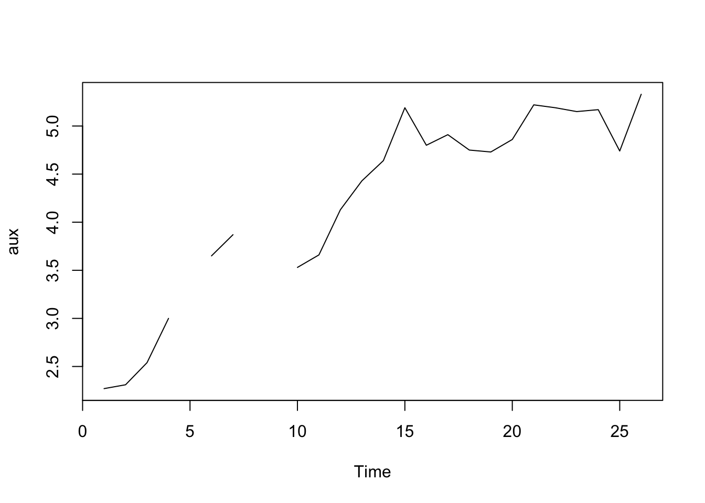
plot(aux2)
Ajustamos un modelo arima para pronosticar los siguietnes dos puntos
modelo<-auto.arima(aux2)
summary(modelo)## Series: aux2
## ARIMA(0,1,0) with drift
##
## Coefficients:
## drift
## 0.1224
## s.e. 0.0527
##
## sigma^2 estimated as 0.07236: log likelihood=-2.14
## AIC=8.28 AICc=8.82 BIC=10.71
##
## Training set error measures:
## ME RMSE MAE MPE MAPE MASE
## Training set 8.259996e-05 0.2584528 0.2084518 0.1304937 4.945747 0.8862748
## ACF1
## Training set -0.002651446plot(aux2,type="l",col="red")
lines(as.ts(modelo$fitted),col="green")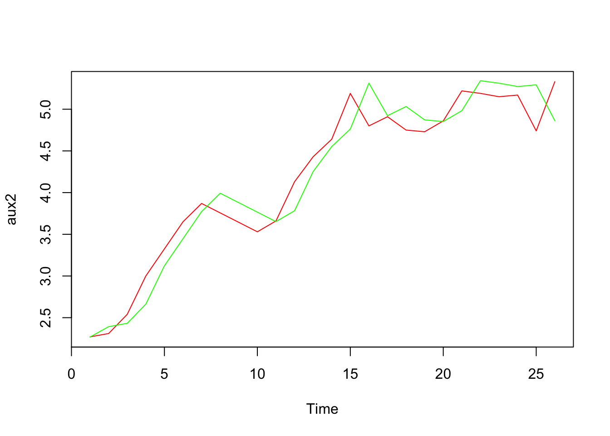
pronostico<- forecast(modelo,2,level=95)
plot(pronostico,main="Pronóstico con auto.arima")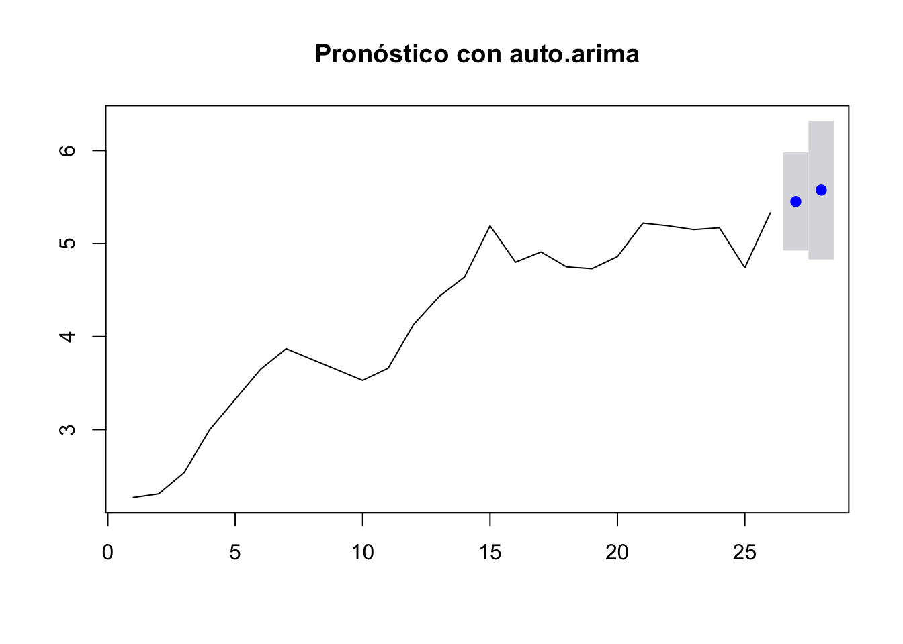
matriz.pronosticos <-data.frame(pronostico$mean,pronostico$lower,pronostico$upper)
matriz.pronosticos## pronostico.mean X95. X95..1
## 1 5.4524 4.925158 5.979642
## 2 5.5748 4.829167 6.320433regresamos el prónostico al dataframe
13.1 version 2 del pronositico
mean(aux2)## [1] 4.184423mean(diff(aux2))## [1] 0.1224mean(diff(diff(aux2)))## [1] 0.02291667acf(aux2)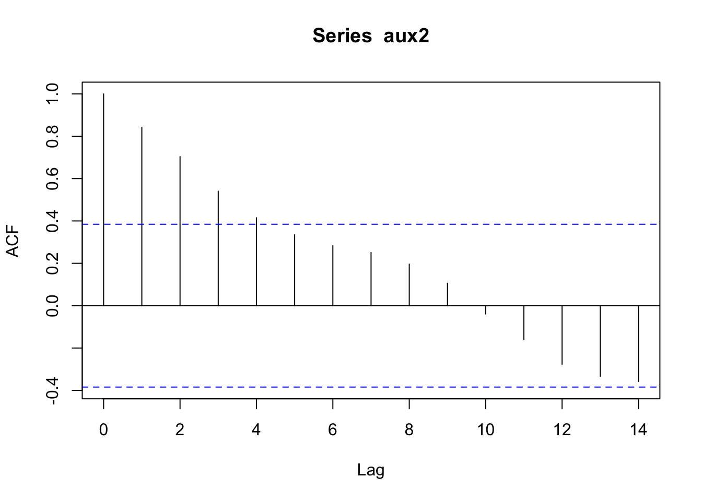
acf(diff(aux2))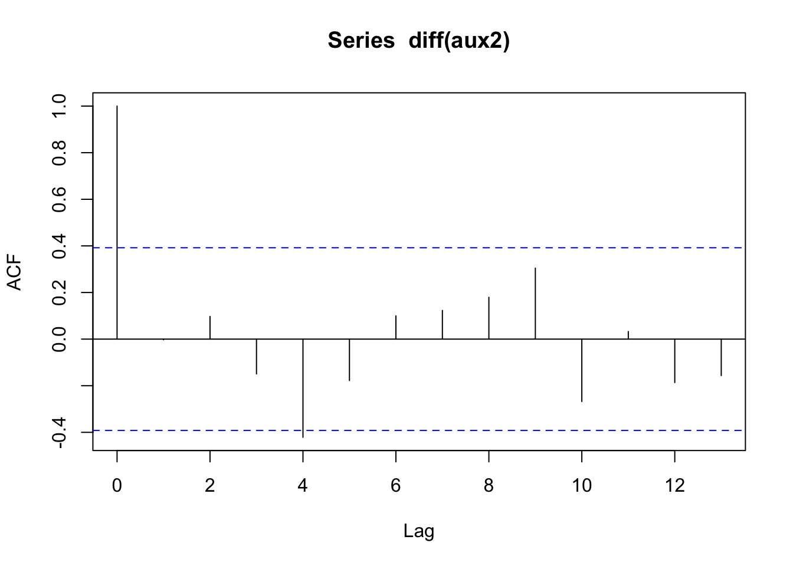
acf(diff(diff(aux2)))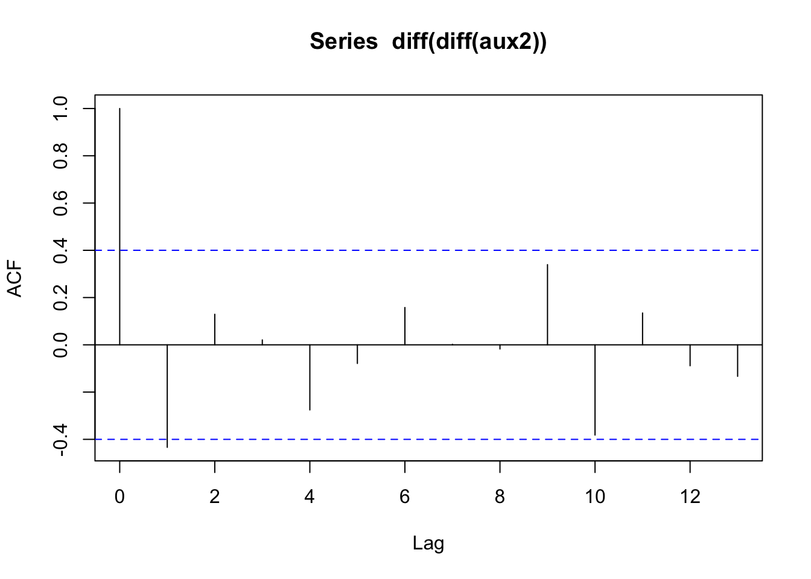
var(aux2)## [1] 0.8982895var(diff(aux2))## [1] 0.07236414var(diff(diff(aux2)))## [1] 0.1410595plot(aux2)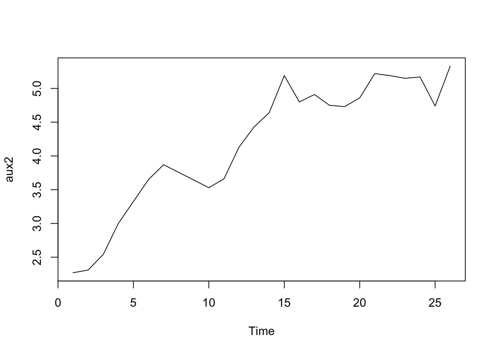
plot(diff(aux2))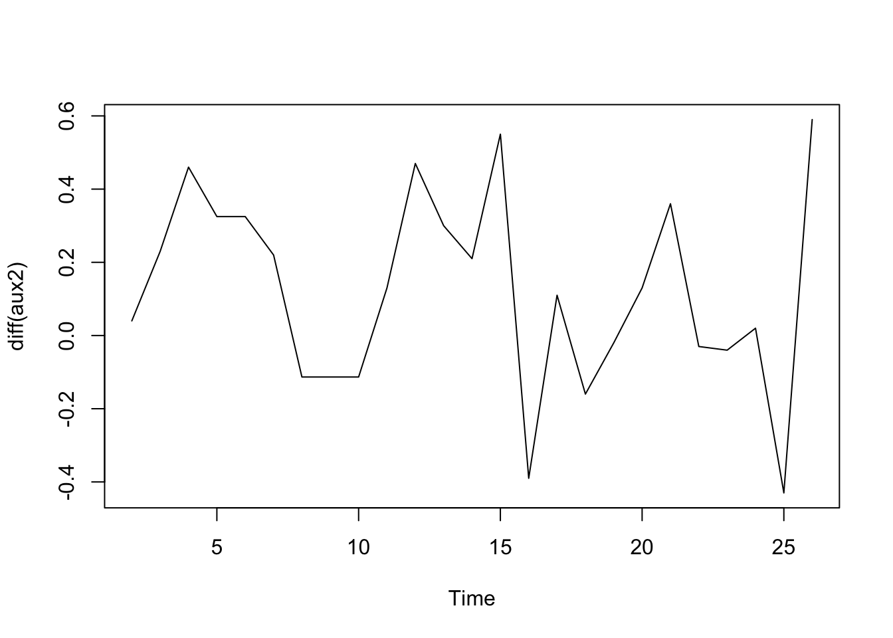
plot(diff(diff(aux2)))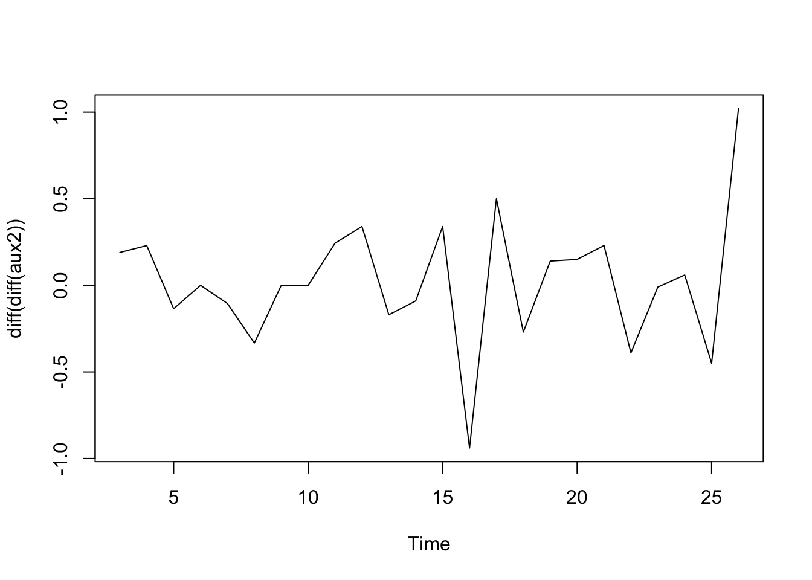
la serie parece ser I(1).
library('tseries')##
## Attaching package: 'tseries'## The following object is masked from 'package:imputeTS':
##
## na.removecount_d1 = diff(aux2, differences = 1)
plot(count_d1)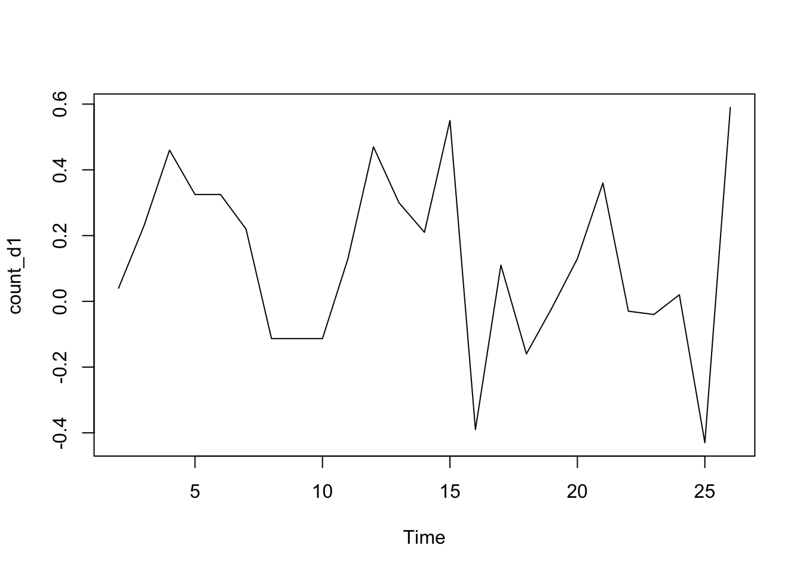
adf.test(count_d1, alternative = "stationary")##
## Augmented Dickey-Fuller Test
##
## data: count_d1
## Dickey-Fuller = -2.8183, Lag order = 2, p-value = 0.2606
## alternative hypothesis: stationarysummary(ur.df(count_d1,lags=0,type='drift'))##
## ###############################################
## # Augmented Dickey-Fuller Test Unit Root Test #
## ###############################################
##
## Test regression drift
##
##
## Call:
## lm(formula = z.diff ~ z.lag.1 + 1)
##
## Residuals:
## Min 1Q Median 3Q Max
## -0.55599 -0.18430 0.00385 0.19965 0.46316
##
## Coefficients:
## Estimate Std. Error t value Pr(>|t|)
## (Intercept) 0.12603 0.06187 2.037 0.053855 .
## z.lag.1 -1.00190 0.22826 -4.389 0.000233 ***
## ---
## Signif. codes: 0 '***' 0.001 '**' 0.01 '*' 0.05 '.' 0.1 ' ' 1
##
## Residual standard error: 0.2804 on 22 degrees of freedom
## Multiple R-squared: 0.4669, Adjusted R-squared: 0.4426
## F-statistic: 19.27 on 1 and 22 DF, p-value: 0.0002331
##
##
## Value of test-statistic is: -4.3893 9.7131
##
## Critical values for test statistics:
## 1pct 5pct 10pct
## tau2 -3.75 -3.00 -2.63
## phi1 7.88 5.18 4.12Acf(count_d1, main='ACF for Differenced Series')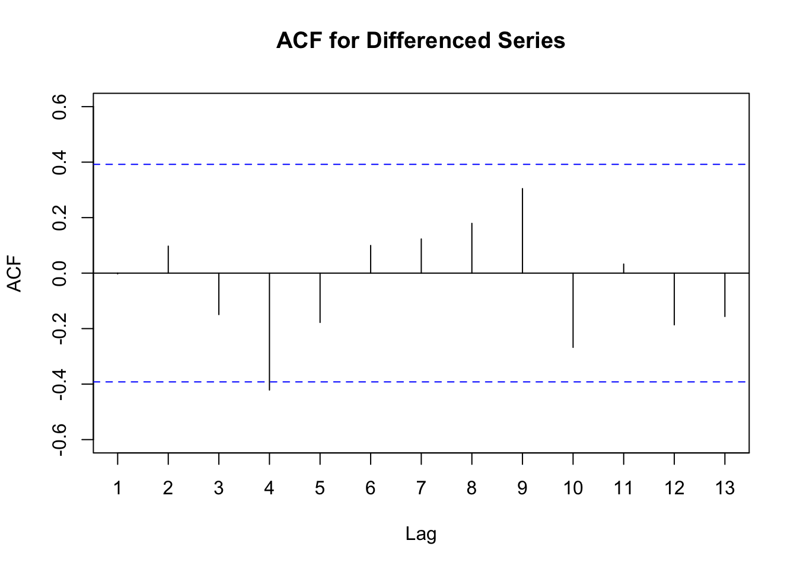
Pacf(count_d1, main='PACF for Differenced Series')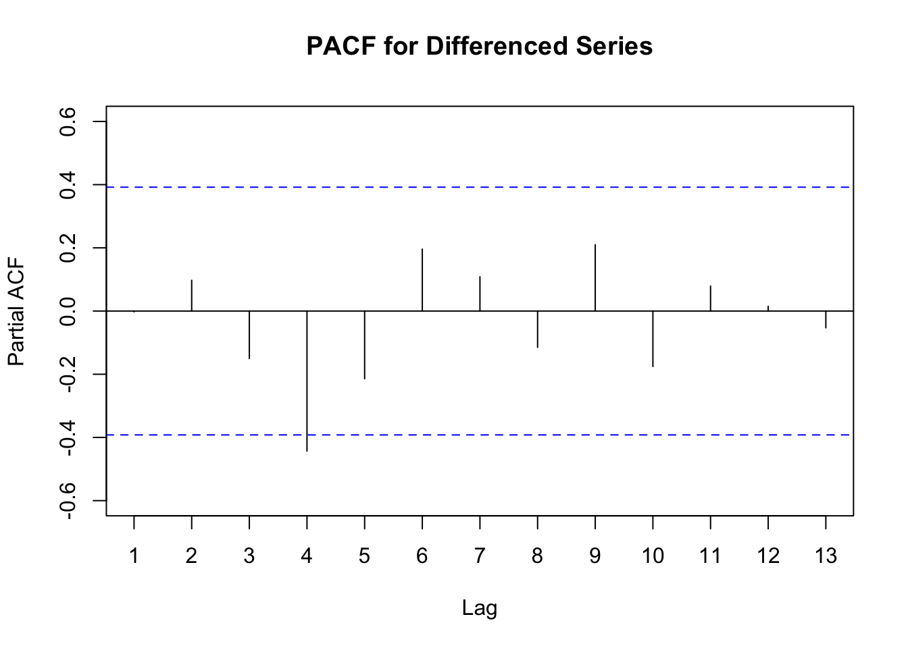
fit2 = arima(aux2, order=c(4,1,4))
fit2##
## Call:
## arima(x = aux2, order = c(4, 1, 4))
##
## Coefficients:
## ar1 ar2 ar3 ar4 ma1 ma2 ma3 ma4
## -0.3674 0.2608 -0.2477 -0.1629 0.4902 0.5539 0.7730 -0.2907
## s.e. 0.6030 0.4189 0.2670 0.2572 0.5967 0.6155 0.6205 0.6338
##
## sigma^2 estimated as 0.04236: log likelihood = 0.84, aic = 16.32tsdisplay(residuals(fit2), lag.max=15, main='Seasonal Model Residuals')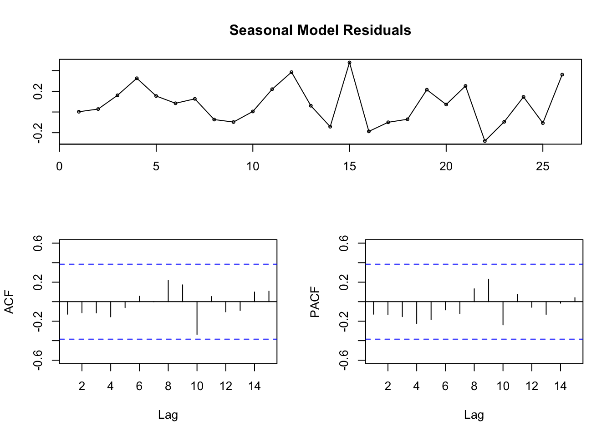
fcast <- forecast(fit2, h=2,level=95)
plot(fcast)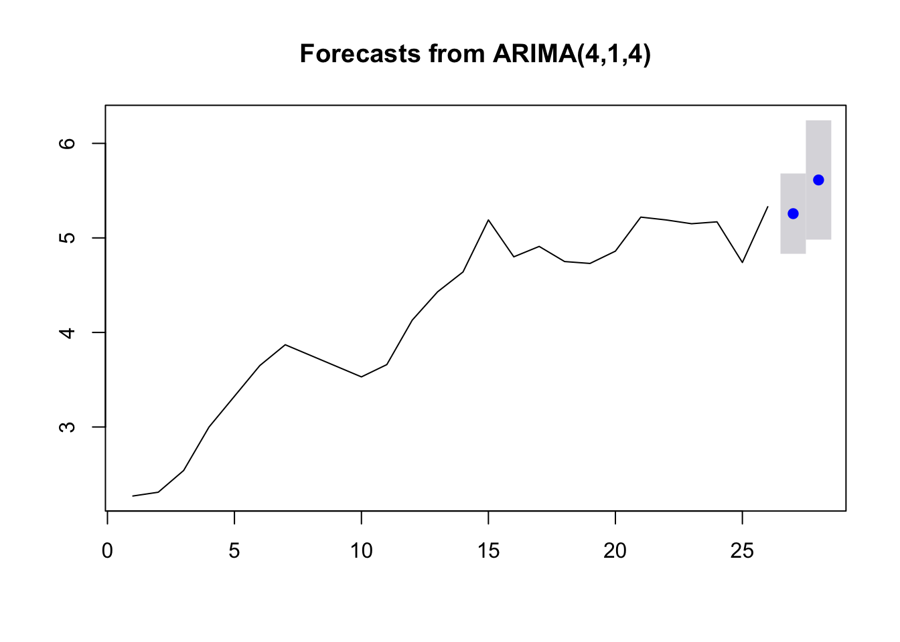
matriz.pronosticos <-data.frame(fcast$mean,fcast$lower,fcast$upper)
matriz.pronosticos## fcast.mean X95. X95..1
## 1 5.256603 4.831780 5.681426
## 2 5.612957 4.982007 6.243908